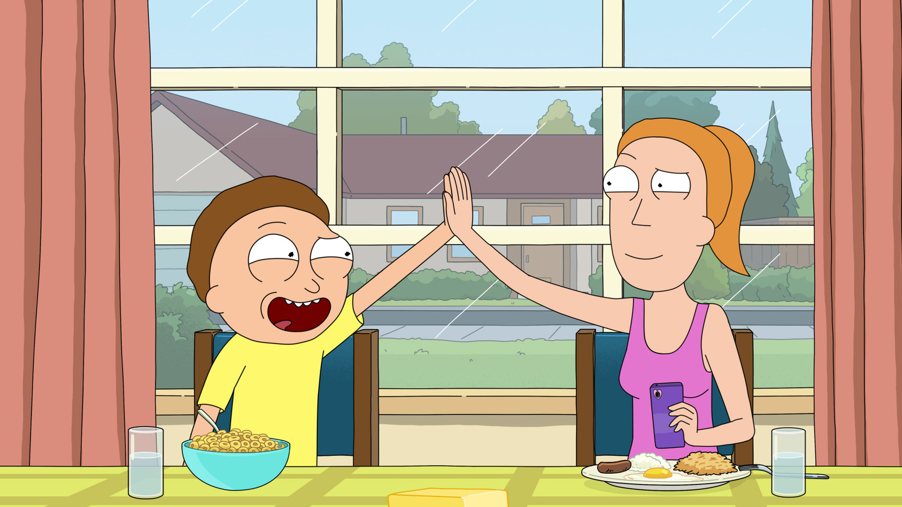

Introducción
Mi nombre es Fabiana Marqués López, tengo 21 años y soy una estudiante del centro IES Gregorio Prieto. Este es mi primer año en DAW (Desarrollo de Aplicaciones Web) y mi segunda vez haciendo prácticas, la primera vez para una empresa. Esta es mi primera vez trabajando con API's, una herramienta la cual considero muy útil, aunque al principio, no tan sencilla de utilizar. He querido dedicar esta página web a una de mis series favoritas, Rick y Morty.

Sobre el proyecto
Este proyecto al principio iba a ir dedicado a la serie Hunter x Hunter, sim embargo, al no ser una API grautita, necesitaba de una KEY para usarla; por esta razón es que cambié la API. El proceso de implementación de la API fue mucho más confusa de lo que imaginé, pero gracias a vídeos explicatorios y foros en Internet, conseguí implementarla correctamente. Para este proyecto no he hecho uso de la herramienta React, la razón es que no conseguí comprender del todo cómo funcionaba, ni siquiera haciendo uso de inteligencia artificial pude hacerme la idea. Este hecho me entristece pues las explicaciones de Jesús fueron claras y de mucha ayuda. Aunque viéndolo desde un punto más positivo, esto solo significa que necesito de más práctica y conocimiento. El objetivo de este proyecto es presentar a los personajes de la serie Rick y Morty mediante una intefaz web donde los usuarios pueden buscar los personajes que deseen y además filtrarlos por género y estado

Lenguajes utilizados
He utilizado los siguientes lenguajes para crear esta página: HTML, CSS y JavaScript. Además de la API de Rick y Morty.

Proceso de desarrollo
Primero comencé con la estructura HTML básica de las páginas, lo primero que creé fue un "nav" para poder navegar más comodamente entre las distintas páginas HTML. Seguidamente, creé mi CSS y comencé poniendo estilos, simplemente para hacerme una idea previa a como quería que quedase. En el diseño utilicé las herramientas CSS Grid y Flexbox para ordenar las tarjetas de los personajes. Antes de integrar la API hice varias pruebas con tarjetas hechas en HTML, hasta que conseguí una estructura aceptable. La integración de la API fue el paso más complicado de todos pues aunque ya conocía de JavaScript, a la hora de elegir la API tenía muchas dudas. Por ejemplo, en qué se diferenciaban las API públicas de las gratuitas y de las cerradas y cómo podía identificar cada una.

Objetivos
Mi objetivo con esta práctica fue emjorar como desarrolladora y ampliar mis conocimientos. Lo cierto es que he ampliado mis conocimientos pues ahora sé cómo hacer uso de una API, sin embargo, todavía me falta mucho que aprender.
